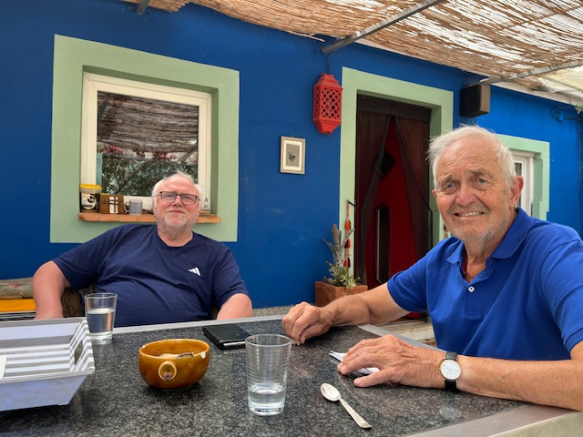
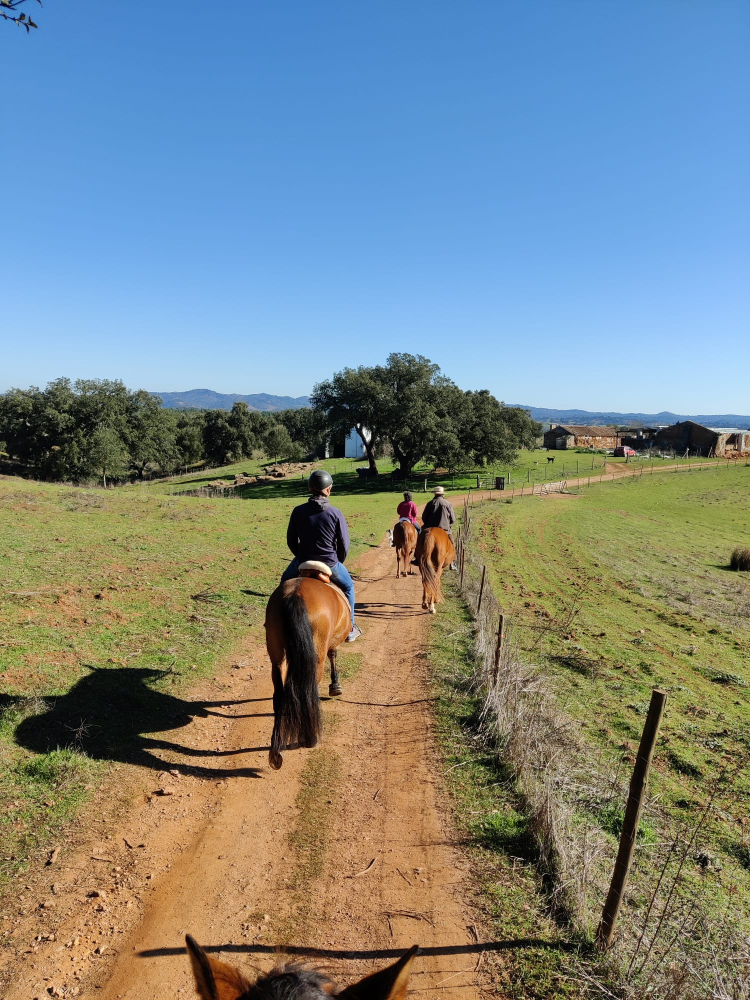
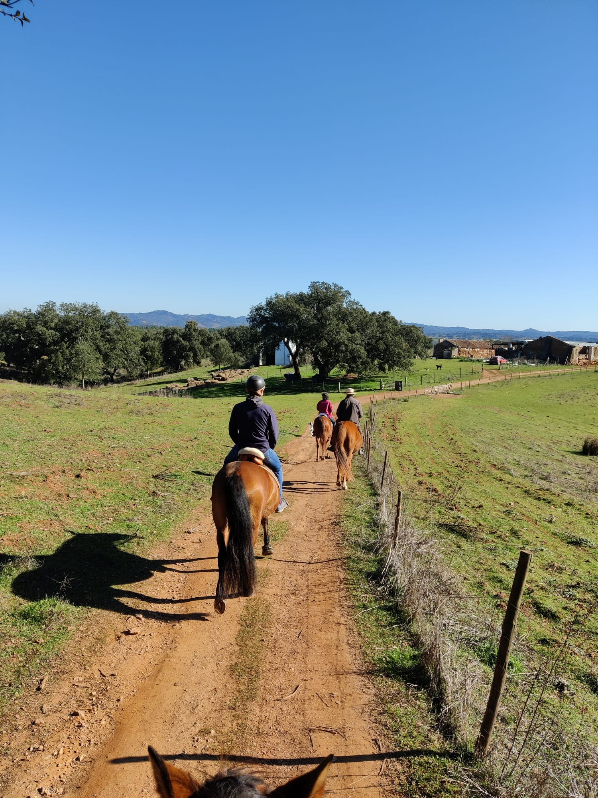

Frank left the way he wanted to...
"If this happens again and I don't wake up, that would not be a bad way to go..."
This quote came after Frank fell of his horse a few years ago, was unconscious for a few minutes and came back without much pain and trouble. He was struck by how peaceful the whole thing was, as he could not remember any pain or shock.
"Falls das nochmal passiert und ich nicht aufwache, wäre das nicht die schlechteste Art und Weise zu gehen..."
Dieses Zitat kam zustande, nachdem Frank vor ein paar Jahren schon einmal vom Pferd gestürzt und für ein paar Minuten bewusstlos war. Er kam ohne große Schmerzen und Probleme wieder zu sich und reflektierte, wie friedlich das Ganze gewesen war, da er sich an keine Schmerzen oder einen Schock erinnern konnte.
Shared Thoughts & Stories
Frank you are an extremely exceptional man,
Nataša
Frank you are an extremely exceptional man,
Nataša
...more than anything, firmly standing behind your over and over confirmed and studied principals. You always wanted to come closer to the truth, curiously researching, very carefully chosen sources . Your interest was incredibly broad, with all actual world problems, not to talk about corona issues in which you was particularly sensitive due to your professional knowledge. Great father, friend, rider, artist, sailor, doctor, animal lover, cook, ..How many life stories and incredible adventures, anecdotes you have to tell. Oh, how much you was suffering over human stupidity. I hope now you found all the answers !!! Your hands were golden. Anything you touched it turned into a beauty or super practical invention. You was soooo passionate towards nature. All trough your life accompanied by dogs, horses, ocean, flowering gardens in beautiful landscapes. To assemble, we spent an incredibly magnificent 15 years of ours relation. Was spicy, colorful, turbulent, but most of all deeply loving. We created an amazing home, on the most beautiful piece of Europe and definitely you enjoyed it every single day. I cry, it hurts undescribable. You left us too early. What is relieving is the way of your departure. You left as you always desired. It look as you design it. In a blink of an eye, on a most beautiful springtime, quiet morning, between flowers and singing birds, from the back of your horse. How grateful I’m to have opportune to walk with you together. Was an absolute outstanding chapter in my life. We meet so many incredible people on the way. If you could only see, how many souls you deeply touched . My love, you will always remind in my heart. Rest in peace and please guide me from this other realm.
It hurts more this way, but Frank was in a particularly great
place the last few weeks...
Jan
It hurts more this way, but Frank was in a particularly great place the last few weeks...
Jan
For some reason, and I am so sure that it is true and not just me seeing it through the lens of this moment, Frank was really at his best the last 5 - 6 weeks.
He was in good spirits, quite optimistic after a few rather pessimistic years worrying about the state of democracy, discourse, truth and so forth.
For some reason not completely clear to me things were turning around to the positive for him lately.
For the first time ever he was talking about starting some physical exercises to help his back. Something Niko and I had been trying to get him to do for more than a decade. He was planning an outdoor sleeping area for himself for the hot summer days. He enjoyed helping me with a new old car that kept having troubles, towing me twice just in the last 2 weeks. Super confidently with a simple rope and sailors knots he was doing from memory. Enjoying tremendously the fact, that towing a vehicle privately is illegal in Portugal - and doing it anyways. Also a few weeks ago we had a barbecue at my place grilling a huge, special piece. Of which Frank said it was the best beef he’d ever had.
He was riding, he was cooking, he was painting a bit, he was reading & watching & discussing online and like I said making plans: Outdoor sleeping, new roof for the guest house, water storage, being more independent from the grid, etc. Essentially doing all the things I now enjoyed doing the most.
It makes it the grief worse right now, because we feel like he could have had another few good years like this. But on the other hand he ended on a real high, which I believe the more we process this loss will come to the forefront more and more as a positive feeling to us too.
Aus irgendeinem Grund war Frank die letzen 5 bis 6 Wochen top drauf. Ich bin mir ganz sicher, dass ich mir das nicht einbilde und durch den Moment in der Einschätzung beeinflusst bin. Nataša und Niko bestätigen das Gefühl.
Er hatte gute Laune, war optimistisch nach ein paar eher pessimistischen Jahren, in denen er sich viele Sorgen um den Zustand der Demokratie, des Diskurses, der Wahrheitsfindung und so weiter machte.
Aus irgendeinem Grund der mir nicht ganz klar ist, drehte sich in letzter Zeit alles zum Positiven für ihn.
Zum ersten Mal seit Niko und ich uns erinnern k√∂nnen, meinte er, er w√ºrde jetzt mal Übungen f√ºr seinen R√ºcken anfangen. (Seit Jahrzehnten versuchen wir dazuzukriegen ein bisschen Kr√§ftigungstraining zu machen, "Kniebeugen!? Werde ich nie machen!"). Er war am Pl√§ne schmieden. Zum Beispiel eine Art Pavillon draussen wo man an heissen Sommertage an der Frischen Luft schlafen kann. Es hat ihm super Spass gemacht mir mit meinem neuen Oldtimer zu helfen, der in den letzten 2 Wochen gleich 2 mal abgeschleppt werden musste. Er hat dann in Seelenruhe mit Seil und Seemannsknoten, die er aus dem Kopf konnte, das Auto gezogen. Der besondere Genuss war, dass wir nach der ersten Abschleppaktion rausgefunden haben, dass das Abschleppen in Portugal privat illegal ist - wir es dann aber ein zweites Mal trotzdem gemacht haben. Mit vorher das Dorf abfahren damit sichergestellt ist, dass nicht irgendwo die Polizei steht. Das schelmische Grinsen kann sich jeder vorstellen denke ich. Vor ein paar Wochen haben wir bei mir gegrillt und ein besonderes St√ºck Fleisch gemacht. Von dem Frank meinte, es sei das beste Fleisch, das er je gegessen hat. ü§ó
Er war am Reiten, Kochen, ein bisschen Malen, Lesen, Youtube-Schauen, online Diskutieren und wie gesagt am Pläne schmieden: Outdoor Schlafplatz, neues Dach für's Gästehaus, Wasserspeicher, unabhängiger vom Netz werden, etc. Im Grunde alles das, was er zuletzt am liebsten hatte.
Das alles macht den Abschiedsschmerz jetzt im Moment umso schlimmer, weil wir denke so hätte er auch gut noch ein paar Jahre weitermachen können. Aber andererseits ist es auch ein denkbar schöner Abschluss, weil er auf einem richtigen Hoch zuende ging. Ich glaube, dieses positives Gefühl wird sich auf für uns mit ein bisschen Abstand herauskristallisieren.
Meine Erinnerungen mit Frank / My memories with Frank
Jutta
Meine Erinnerungen mit Frank / My memories with Frank
Jutta
Frank ist der Grund warum es mich nach Portugal verschlagen hat. Er war vor vielen Jahren bei uns in der Ausbildung zum Kutsche fahren und erz√§hlte von seiner Idee, auszuwandern. Er war so begeisterungsf√§hig und das steckte regelrecht an. So fuhr ich ihn besuchen und er zeigte mir, mit gro√üer Freude seine neue Wahlheimat. Ich habe viele sch√∂ne Stunden, mit leckerem Essen und gutem Wein, mit ihm im Kreise seiner Freunde, verbracht. Er erz√§hlte gerne Geschichten und konnte wunderbar Dinge erkl√§ren. Dies tat er mit gro√üer Freude und sehr lebendig. Die Liebe zu den Pferden teilten wir und manchmal gab es auch hartn√§ckige Diskussionen. Aber das war auch besonders an ihm, er hatte seine ganz eigene Meinung. Er war ein Freigeist und von stolzer Natur. Ich werde ihm immer dankbar sein f√ºr all die sch√∂nen gemeinsamen Stunden und vor allem, dass er mir den Weg nach Portugal gezeigt hat. üôèüí´ ‚ÄûRuhe in Frieden mit all Deinen Erfahrungen, auf dieser Erde‚Äû
Frank is the reason why I ended up in Portugal. Many years ago he was training to be a carriage driver with us and told me about his idea of ​​emigrating. He was so enthusiastic and it was really infectious. So I went to visit him and he showed me his new adopted home with great joy. I spent many wonderful hours with him, with delicious food and good wine, in the company of his friends. He loved to tell stories and was able to explain things wonderfully. He did this with great joy and very lively. We shared a love of horses and sometimes there were stubborn discussions. But that was also special about him, he had his own opinion. He was a free spirit and proud of nature. I will always be grateful to him for all the wonderful hours we spent together and above all for showing me the way to Portugal. üôèüí´ "Rest in peace with all your experiences on this earth" ü§ç
Just a wonderfull memory...
Irma
Just a wonderfull memory...
Irma
...of your dad, your husband, our dear friend Frank❣️
Thank you!
Pola
Thank you!
Pola
Franks erstes Pferd / Frank's first horse...
Ilse
Franks erstes Pferd / Frank's first horse...
Ilse
Winga und unsere Terrier Schlumpi und Paddy.
Frank Steinhoff [...] diesen überaus klugen, nachdenklichen und
gebildeten Menschen, dessen Verlust auch ich zutiefst betrauere.
Heiner
Frank Steinhoff [...] diesen überaus klugen, nachdenklichen und gebildeten Menschen, dessen Verlust auch ich zutiefst betrauere.
Heiner
Am 12.12.2020 um 16:59, es war zufällig mein 70. Geburtstag und der Höhepunkt der Corona-Panik, schrieb mir Frank Steinhoff die folgenden Zeilen. Sie sagen alles über diesen überaus klugen, nachdenklichen und gebildeten Menschen, dessen Verlust auch ich zutiefst betrauere.
„Lieber Herr Flassbeck, Anlässlich des Textes v. Lafontaine (Nachdenkseiten v. 11.12.) möchte ich sagen, dass ich dem fast vollständig zustimme. Zwei wichtige Sachen habe ich aber vermisst. 
An vorderster Stelle, noch vor der Sorge um die Alten, muss die Sorge um die Gesundheit der Kinder stehen und zwar nicht nur die physische, sondern vor allem die seelische und geistige, weil die das Wohl aller Lebenden in der Zukunft determinieren wird. Da läuft es gerade schnurstracks in eine schlimme Sackgasse.  Das zweite ist etwas, von dem leider niemand spricht, nicht einmal die Ärzte.
Ein Virus ist nichts Lebendes, es kann sich selbst nicht vermehren, hat keinen Stoffwechsel, keine Absichten, ist weder gut noch böse. Jedes Virus ist - ohne Ausnahme - ein Produkt, hergestellt von einem Lebewesen, das sich vorher infiziert haben muss. Alle im Umlauf befindlichen Viren sind so gut wie ausschließlich aus heimischer Produktion. Made in Germany. 
Jede schwere und gefährliche Viruserkrankung ist deshalb in Wirklichkeit eine fehlerhafte, zumeist übertriebene Reaktion des menschlichen Immunsystems auf das erschreckende Erscheinen der Viren ante portas. Das Immunsystem ist überrumpelt, wegen Trainingsmangel schlecht vorbereitet und leitet unangemessene oder unverhältnismäßige Abwehrmaßnahmen ein, um so mehr, je weniger bekannt das jeweilige Virus ist. Das gleicht der panischen Reaktion der unwissenden Politik. Die schmerzlich vermisste Gelassenheit fehlt also sowohl im Kleinen wie im Großen. Die Aufgaben unseres Immunsystems sind äußerst kompliziert und vielfältig. Es muss nicht nur die verschiedensten Krankheitserreger erkennen und eliminieren, sondern auch eingedrungene fremde Proteine. Es verfügt über gefährlich scharfe Waffen, die sich bei autoaggressiven Krankheiten und Allergien gegen die eigene Gesundheit wenden und, ebenso wie bei anaphylaktischen Überreaktionen den Tod herbeiführen können. Es braucht ein ständiges Training, ständiges Üben, regelmäßiges Updating, d.h. die Menschen dürfen sich nicht isolieren, sondern müssen sich im Gegenteil mit der Welt auseinandersetzen, mit dem Dreck, mit Kinderkrankheiten und mehr. Dann würde auch aus einer Infektion so manches mal ein symbiotisches Verhältnis, wie es in unserer Entwicklungsgeschichte schon millionenfach vorgekommen ist.
Die schützende Rolle von Antikörpern, also von Impfung, wird häufig überschätzt. Bei hoher Virenlast kann diese erste Verteidigungslinie überrannt werden. Sie sind etwa so nützlich, wie der Feuerlöscher in der Garage. Er überbrückt die Zeit bis die Feuerwehr kommt. Die eigentliche Arbeit wird von Plasmazellen und Lymphozyten geleistet, die sind die wahre Feuerwehr, aber das auch nur, wenn sie geübt sind.Übrigens mutieren Viren nicht, sie werden jedoch fehlerhaft repliziert. Dadurch werden sie anderen, bekannteren, banalen Viren ähnlicher und die Abwehrreaktionen fallen gelassener aus. Gute Ärzte haben großen Respekt vor den Krankheiten, um die es hier geht und würden sie niemals bagatellisieren. Sie verlieren aber ihre Ruhe und Gelassenheit nicht und können beruhigend und ermutigend auf die Kranken oder Angehörige einwirken. Sie gleichen eher erfahren Kapitänen, die auf allen sieben Meeren unterwegs waren, voller Ehrfurcht vor den Naturgewalten, aber sie wissen, was zu tun ist und verlieren nicht die Nerven.“
"Frank, o Gentleman mais teimoso que eu conheci"
Paula
"Frank, o Gentleman mais teimoso que eu conheci"
Paula
Franks letzte Nachricht...
Peter Bölle
Franks letzte Nachricht...
Peter Bölle
"Peter der Ritter der Tafelrunde"(dies war seine letzte what's app Nachricht vom 28.4.2024 an mich) Seit Jahrtausenden sucht die Menschheit nach dem Heiligen Gral. Der Legende nach soll der Heilige Gral Unsterblichkeit bringen. Der Gral verleiht seinen Besitzern, dazu gehört auch Frank, alles: Glück sowohl auf der Erde als auch im Himmel. Frank hat sein Lebensglück in Portugal gefunden. Über 30 Jahre Freundschaft haben uns eng verbunden und bleiben unvergesslich. Ich vermisse Dich Frank

Schöne Stunden...
Dorothee & Toni
Schöne Stunden...
Dorothee & Toni
Wir freuen uns sehr, dass Frank vor zwei jahren noch einmal hier in Flensburg war und wir zusammen ins Museum hinaufstiegen, um dort meine Bilder anzusehen. Das waren schöne Stunden!
Happy journeys Frank, ❤️
Trisha & Tim
Happy journeys Frank, ❤️
Trisha & Tim
I think this sums up just how Frank felt towards our crazy world! (memories of those covid days)
Momente
Susanne
Momente
Susanne


Erinnerungsphotos
Laura
Erinnerungsphotos
Laura
I met Frank a few years ago,
Vito
I met Frank a few years ago,
Vito
... quite a few in fact. Very polite, with a gentleman's profile, always friendly. I dealt more with Frank at a time when I decided to change my life and he (and Natasha) gave me their hand and I went to live in the small house on their property. It was a gesture I greatly admired because, although I avoided disturbing him, it would always clash with his privacy, which he valued very much. At the end of the afternoon, looking out over the beautiful countryside in front of the house, there was room for a few conversations that invariably ended in laughter, as I in my terrible English and Frank in his elegant speech never reached any great conclusions. Luckily, at the time, we had discovered a brand of whisky that was good for our throats and put us in a good mood. Frank, I'm going to miss your good morning here at Barbancha and your guacamole, which you were so keen to give us. In the meantime, get ready to welcome us (calm down, we'll be here for a whileüòÖ) with a big party. Big hug, Frank
Auf Jörns Hochzeit / At his brother' wedding
Ilse
Auf Jörns Hochzeit / At his brother' wedding
Ilse
Nannemannshusen, Bilder von unserer Reiterhochzeit.

We have thought about you a lot during these days,...
Greta & Niccolo
We have thought about you a lot during these days,...
Greta & Niccolo
Hi Frank, We have thought about you a lot during these days, we have talk about many moments and experiences lived together, your smile, your passions, your curiosity and your infinite wisdom. The dinners under your pergola, the fish filleted together with your precious Japanese knives, Rita's delicious coffees, the hours spent talking about your "never finished" painting, the lunches at Jan's house, the pizza at Pizza Domingo, the ride with your beloved horses and that steak... We are surely forgetting something! But what we mean is that during our years in Portugal, you have always been a certainly! It will be sad to return to Milfontes and not find you, an essential part of our "Portugal" will be missing but you will always be in ouru heart and we will treasure the teachers you gave us, all the curiosities you told us and that approach to life which inspired us so much. We are grateful to have met you Frank, thank you for sharing your wonderful family with us! We will miss you so much, Greta and Niccolò.
 


Ich bin so froh, dass wir letzten Sommer bei euch in Portugal
waren...
Doris
Ich bin so froh, dass wir letzten Sommer bei euch in Portugal waren...
Doris
...und sehen konnten, welches Paradies ihr euch geschaffen habt. Er war glücklich dort und so traurig sein Tod auch ist, er ist wie Jan schon geschrieben hat, eigentlich so gegangen wie er sich das immer gewünscht hat. Für die die zurückbleiben ist es schwer. Ich wünsche euch ganz viel Kraft und wunderschöne Erinnerungen. Das Bild hat er für uns gemalt, es zeigt die Küste von unserer Seite nach Dänemark. Es hängt seit Jahren in der Küche und dort wird es auch bleiben.
"I have a long-lasting memory of his kindness and artistic
abilities"
Rupert
"I have a long-lasting memory of his kindness and artistic abilities"
Rupert